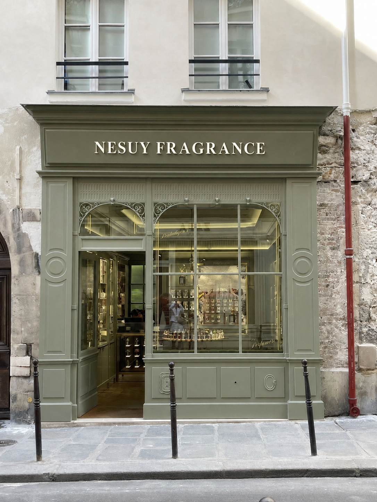

Notre histoire
NESUY est née d'une conviction : le parfum de niche ne devrait pas être réservé à quelques initiés. Chaque fragrance est pensée comme une pièce unique, élégante et facile à porter.
On est deux amis d'enfance, et depuis des années, on partage une passion pour les parfums et avec Nesuy on veut te transmettre cette passion et te faire découvrir des beaux parfums de niche et te conseiller celui qui te correspond le mieux. Le tout à un prix plus bas qu'en boutique.

Nos engagements
Rareté
Des accords singuliers, loin des parfums que l'on croise partout.
Matières nobles
Des ingrédients choisis pour leur tenue et leur profondeur.
Accessibilité
Le luxe de la niche, pensé pour tous.